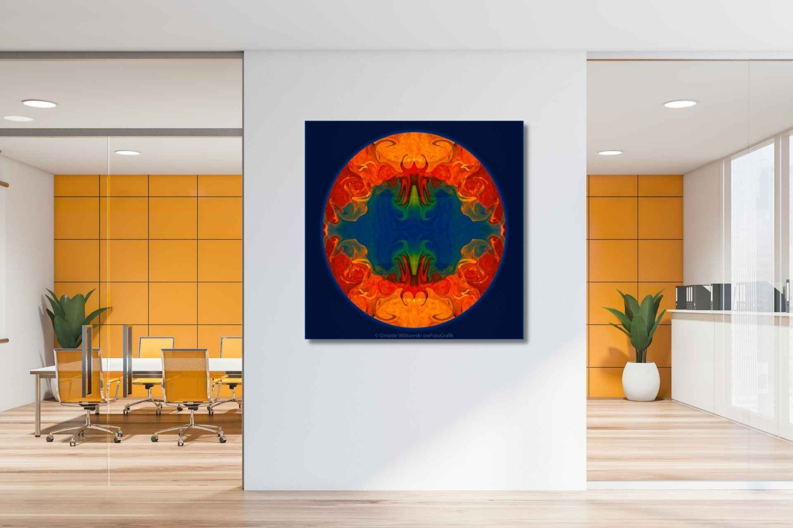
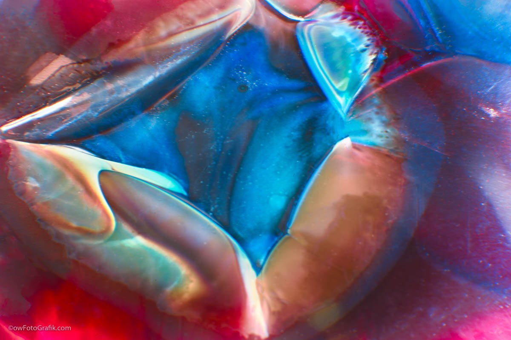
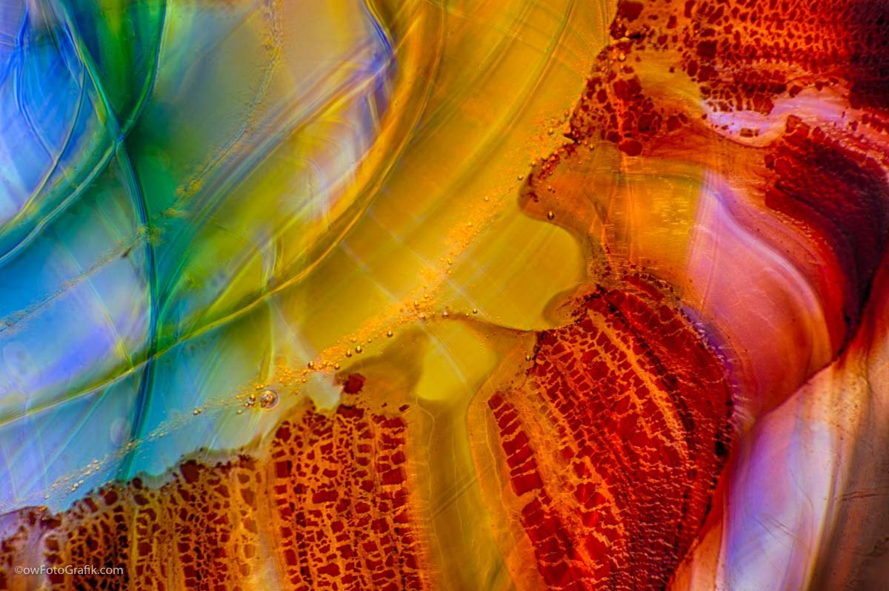

The Library · Omaste Witkowski
How Colors Can Affect Health and Wellness

Did you know that colors can have a profound affect on physical, emotional, spiritual and mental health?
Colors are not just colors, they represent the aspect of things that is caused by differing qualities of light being reflected or emitted by them. In other words, you have to have light to see color. In our interior spaces, these colors affect us on a psychological level and have an instant affect on our health and wellness.
Some colors excite and energize us, while others can soothe and relax us. This becomes really important when we are considering designs for healthcare settings, assisted living facilities, our homes, workplaces and rental properties. Knowing how colors affect health and healing in interior design can help us choose which ones to use, where to use them and the affect they will have on the people who spend time there.
This is also important when we look at colors in different rooms. You will want soothing, soft, and relaxing shades for your bedroom environment to promote sleep, rest, and renewal. Save the bright and exciting colors for the living room, workspace, office, or art studio.
Smart Design That Incorporates Color Psychology
Colors can have both positive and negative affects on all living beings, and we may be able to utilize the healing power of colors to psychologically stimulate creativity, promote calmness and also reduce our heart rate, and aid in physical healing.
Color psychology is a powerful interior design tool that impacts the mood of a room more so than any other factor. Different shades evoke certain emotions so, when choosing your colors, it’s important to consider the kind of atmosphere you wish to create and which colors will help you achieve this.
Color is all around us — from green grass and blue skies to beautiful orange sunsets and freshly bloomed flowers — and it impacts our lives more than we realize. But it can affect our thinking, mood, and most importantly, our overall health.
When a person is surrounded by calming hues such as blue or green, they feel relaxed. Blues can help lower heart rate while greens promote restfulness — both can aid in healing. Soothing earth tones, turquoise, and shades of blue are known to relax and calm moods, which can alleviate the anxiety that many people feel.
In an environment where physical movement is required, bright and bold colors can promote energy and adrenaline. Walls should feature neutral and relaxing colors such as beige or grey while a feature wall could be painted blue, purple or even a bold red or orange. A rainbow of colored exercise floor matting can encourage people to push through exercises and promote endurance.
It’s also the case that if a person is surrounded by loud vibrant tones such as red, maroon, or orange, they feel energetic and passionate. Similarly, neutral colors such as white or gray make them feel serene. Office environments are great places to have a mix of the neutral and bright colors that will help people stay calm as well as awake, energized and focused. A mix of gold and blue can be stimulating and soothing at the same time.

A Color For Every Room Of The Home, Office or Rental Property
The fun thing about colors is that they also have shades and hues!
So you can use a variety of colors in quite a few ways throughout your interior rooms and still enjoy a coordinated color palette. One of the best ways to do this is to choose Artwork or Photography that will bring it all together. A statement piece and/or a feature wall can set the tone, and energy in a room quickly and efficiently.
Having at least one piece of art in every room that set’s the space will make interior designs much easier to coordinate. Maybe there is a piece of furniture with one color and a cabinet that doesn’t quite match. How do you bring them together? With a fun piece of art, of course.
Glass Wall Art is one great way to achieve balance in any room. The colors in these gallery pieces are suitable for any and all interior design needs in any room. There are hundreds of pieces to choose from in a variety of colors, hues, and shades as you can see below.

Handblown Glass Up Close

Crystal Ball Gallery

Peacock Vase Gallery
Now that we know how color is a powerful interior design tool that impacts the mood of a room, we can see why the choices we make for art, fabrics and furnishings are so important. Different shades evoke certain emotions so, when choosing your colors, it’s important to consider the kind of atmosphere you wish to create and which colors will help you achieve this.
10 Colors Commonly Used In Interior Designs
Red
The color red is the most vibrant color that represents emotions in their entirety. Whether it is dark shades like maroon or light shades of ham red, they create an atmosphere of love and camaraderie. Implementing the color red in your design plans adds excitement and vigor to the entire room
Brown
A lighter and softer deviation from red is the color brown. With its natural hue and soft, reassuring essence, brown can work wonders in vast spaces to synchronize different elements of modernism and classic.
Orange
Another prominently vibrant color is orange. It symbolizes sunshine and nature. Orange and all its shades pretty much have a positive effect on the psyche. Distant tones of Orange, such as gold represent wealth and prosperity. It can either reflect on the client’s personality or their desire for success and fame.
Yellow
The color yellow is synonymous with sunshine, thereby spreading the effect of light and happiness. Yellow is also associated with intellect and prosperity, due to its close associations with the color gold.
Green
When people see the color green, they think of nature. Although, in reality, nature can be cruel, the human psyche associates nature with freshness, peace, and trust. Thus, green is a powerful color in interior design.
Blue
Blue is among the most calming colors in the palette for interior design. In regards to the psychological effects of color, blue relaxes the mind and slows down heart rate, metabolism, blood pressure, and hypertension.
Purple
The color purple is usually associated with elegance and royalty. Purple color schemes work well in areas that inspire creativity and design. Bright hues of purple such as violet or plum add flair to your design scheme. Whereas, lighter shades of purple such as lavender and mauve create a calm but regal effect in your design.
Pink
The color Pink influences emotions that are closer to the heart. When used appropriately, pink and all its shades create an atmosphere of love and compassion.
Black
The color black has always fared well with versatility and elegance. Black signifies simplicity and functionality. This color works best in modern interior design and architecture.
Gray
The color Gray is another neutral color that is highly associated with elegance and style. Although there is some controversy as to the effects of gray on the human mind, if used correctly, it can have quite a positive effect.
White
The color white is a universal neutralizer. Although all colors of the spectrum essentially emerge into white, in interior design, White serves as a powerful color scheme.

Color schemes are such an important factor for interior designers. The color of the walls, furniture, natural elements, decorative pieces, lights, and fixtures all play an supporting role in the psyche of the inhabitant. They spent hours surrounded by the combination of colors chosen. Therefore, it is always good to choose color schemes based on the client’s personality, intended uses and desires.
It’s also important to show clients color swatches and/or sample prints. Each person sees colors a bit differently so they might look one way to you and differently for your client(s). It’s hard to fix colors, and much easier to establish compatibility in the beginning of a project.
Find your own piece with the art adventure · Ask the gallery what fits your wall